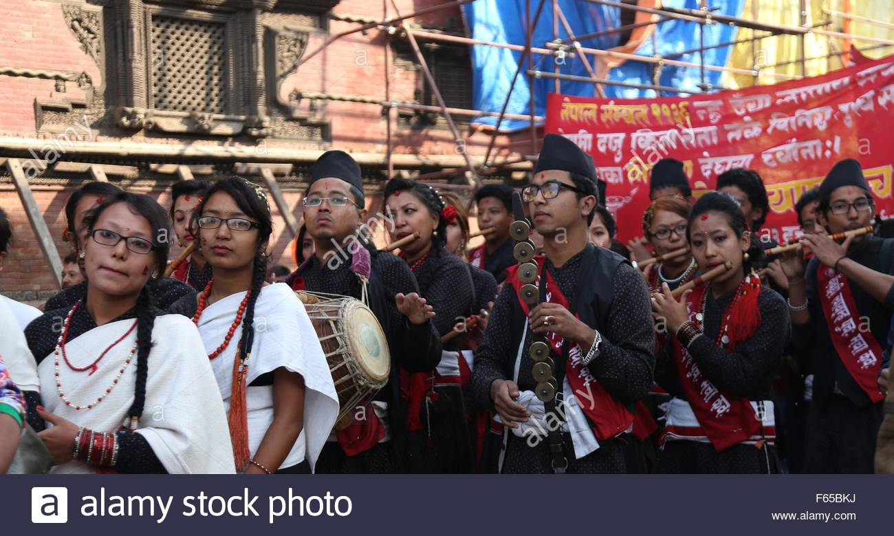

Residents of Madhyapur Thimi
Amongst the total population of around 50 thousand in Thimi,90 percent of people are Newars.
Newars of Madhyapur Thimi

The Newars seldom live isolated. So do the Newars of Madhyapur Thimi. Chapahcho, Balkumari, Nagadesh, Bode, Nikoshira and Lokanthali are main Newar settlements.
There are following newar castes settling in Madhyapur Thimi:
a) Dyah Bramhu or Bramhan (Priests)
b) Syasyah or Shrestha
c) Kumah or Prajapati (Potters)
d) Van or Karanjit
e) Pun or Chitrakar (Painter)
f) Sayami or Manandhar (Oil Pressers)
g) Chhipa or Ranjitkar (Dyers)
h) Naya or Khadki / Shahi (Butchers)
i) Jugi or Kusle / Kapali
j) Gharaghuru or Halahulu
k) Don or Badyakar
l) Dulya or Rajbahak
m) Kau or Nakarmi (Iron smith)
n) Gubhaju or Bajracharya (Buddhist priests)
o) Poh or Pode
p) Katah or Suddhakar
q) Nau or Napit
r) Gathu or Malakar
Apart from these, Tuladhar, Byanjankar and others are also found in new settlements.
Non Newars of Madhyapur Thimi

Non Newars are in Gakhu, Gathaghar, Sanothimi, Kausaltar and few in other places. The following are the non newars setting in Madhyapur Thimi.
a) Chhetri
b) Bramhan (Priests)
c) Magar
d) Tamang
e) Damai (Tailors)
f) Sarki (Shoe Makers)
g) Karki
h) Rai
p) Ban
i) Gupta
j) Pande
k) Giri
l) Parajuli
m) Khadka
n) Khatri
o) Adhikari
q) Lama
r) Kami (Ironsmith) and few others